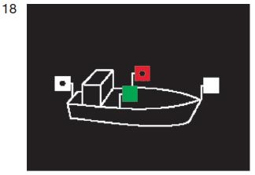

- a)
ein Topplicht, jedoch hell statt stark, in gleicher Höhe wie die Seitenlichter
und mindestens 1,00 m vor diesen; - b)
Seitenlichter, die gewöhnliche Lichter sein dürfen; sie müssen in
gleicher Höhe und in einer Ebene senkrecht zur Längsachse des
Fahrzeugs gesetzt sein und innenbords derart abgeblendet sein,
dass das grüne Licht nicht von Backbord, das rote Licht nicht von
Steuerbord gesehen werden kann; - c)
ein Hecklicht;
|  |